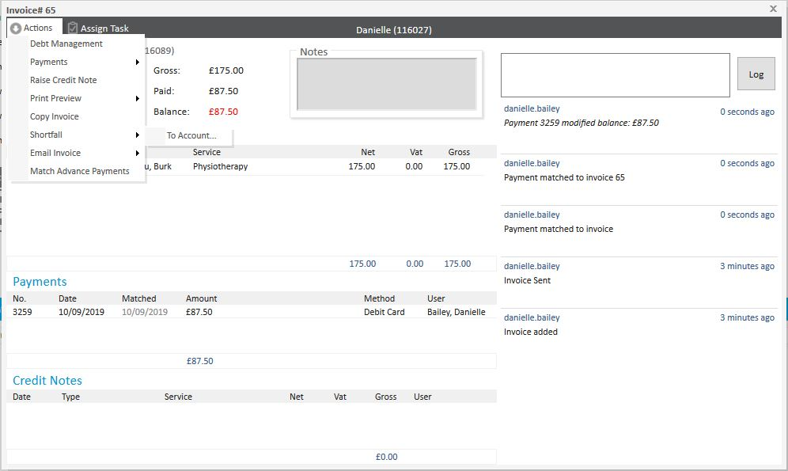
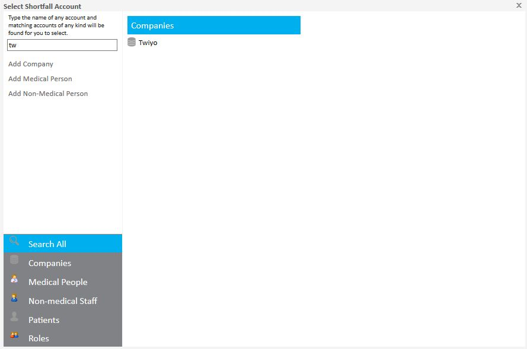
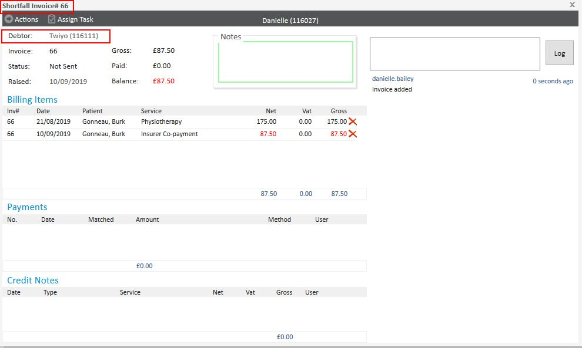

There are situations where an invoice’s payment is shared between multiple parties. For example:
Despite having a single invoice for the total amount, the system allows you to split the payment responsibilities using the Shortfall function. This ensures accurate tracking of payments made by each party.
You are unable to create a shortfall if there is VAT on the Invoice.
This article explains how to manage invoices where payment is split between multiple parties, such as a patient and their insurer. It focuses on using the shortfall function in Meddbase to handle scenarios where only part of the invoice is paid initially, and the remainder is billed to another party.
On an invoice that has been marked as sent (finalised), clicking Actions will present a menu. There is an option listed as Shortfall > To Account. this will allow for the relevant Insurance firm in this scenario to be located or for the relevant company to be located.


Once this has been done Meddbase will ask for confirmation that the Invoice is to be reinvoiced, this will then shortfall the remaining balance to a new invoice.

Now the Insurer will be listed as owing the remaining 50% of this invoice. It is important that the shortfall is completed after the initial payment has been made otherwise the shortfall will be for the entire value of the invoice.